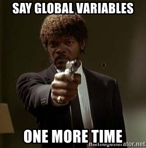

6.1.5 Les fonctions⚓︎
La notion de fonction est essentielle en programmation. Ces fonctions sont des blocs d'instructions auquels on donne un nom, et qui ont une tâche bien précise. L'utilisation de fonctions permet de construire des programmes plus simples à écrire, à lire, à vérifier et à modifier, en découpant le programme en sous-programmes. Autre avantage, on peut utiliser ces fonctions à plusieurs endroits du programme et éviter une certaine lourdeur.
Nous avons déjà rencontré des fonctions depuis le début de l'année: par exemple print, bin, len.
En Python, on peut définir une fonction avec le mot-clé def.
1. Schéma général d'une fonction⚓︎
En règle générale, une fonction s'applique à un ou plusieurs paramètres, et renvoie (au moins) une valeur.
Exemple
La fonction bin prend un nombre entier (type int) comme paramètre et renvoie son écriture binaire.
>>> bin(42)
'0b101010'
Définir une fonction - syntaxe générale
Pour définir une fonction, on utilise le mot-clé def suivi du nom de la fonction, avec le(s) paramètre(s) entre parenthèses. Le bloc d'instructions constituant le corps de la fonction doit être indenté.
On renvoie une valeur avec le mot-clé return.
| üêç Script Python | |
|---|---|
1 2 3 | |
Reprenons par exemple un programme écrit en exercice sur la boucle for qui calcule la somme des entiers naturels jusqu'à 1000:
| üêç Script Python | |
|---|---|
1 2 3 4 | |
Transformons-le en une fonction. L'objectif est de pouvoir utiliser cette fonction quand on en aura besoin, et éventuellement pour calculer la somme des entiers jusqu'à n'importe quelle valeur, pas nécessairement 1000. Cette valeur va être le paramètre de la fonction. Et on ne veut plus afficher la somme, mais que cette somme soit renvoyée par la fonction (pour l'affecter à une variable, ou bien pour affichage).
| üêç Script Python | |
|---|---|
1 2 3 4 5 | |
Exécutez ce code dans votre IDE. Que se passe-t-il?
Lorsque l'interpréteur Python parcourt cette fonction, rien ne s'affiche : la fonction est maintenant prête à être appelée, mais n'est pas exécutée tant que l'utilisateur ne le demande pas explicitement.
Ce sera le cas pour toutes les fonctions : elles doivent être appelées pour s'exécuter.
Dans la console, faites un appel à la fonction:
>>> somme(42)
903
Vocabulaire
Dans cet exemple:
- la variable
nest le paramètre de la fonctionsomme; - on a appelé la fonction
sommeen lui passant l'argument42; - l'appel à cette fonction a renvoyé la valeur
903.
«Éjection» du code avec return
L'emploi du mot-clé return provoque une éjection du code: tout ce qui suit l'instruction commençant par return ne sera pas exécuté.
Obervez la fonction suivante en l'appelant en lui passant plusieurs arguments successivement.
| üêç Script Python | |
|---|---|
1 2 3 4 5 6 7 8 9 10 | |
Fonction à plusieurs paramètres
Fréquemment, il arrive qu'on ait besoin d'écrire une fonction avec plusieurs paramètres: on les écrit séparés par des virgules lors de la déclaration de la fonction.
Exemple:
| üêç Script Python | |
|---|---|
1 2 3 4 5 | |
Il faut alors respecter l'ordre des paramètres lors de l'appel de la fonction:
>>> repete_lettres("NSI", 3)
'NNNSSSIII'
>>> repete_lettres(3, "NSI")
Traceback (most recent call last):
File "<pyshell>", line 1, in <module>
File "", line 3, in repete_lettres
for c in chaine:
TypeError: 'int' object is not iterable
>>>
2. Cas Particuliers⚓︎
2.1 Fonction sans valeur renvoyée⚓︎
Il n'est pas obligatoire qu'une fonction renvoie une valeur. Dans ce cas, on parle plutôt d'une procédure.
Par exemple, la fonction bien connue print va afficher en console les arguments qu'on lui a passés, mais elle ne renvoie pas de valeur (ou plutôt une valeur particulière : None).
Si on tente d'affecter à une variable le résultat d'un print :
>>> a = print("hello world")
hello world
>>> a
>>>
a contient None.
Un autre exemple de fonction à paramètre, mais qui ne renvoie rien:
| üêç Script Python | |
|---|---|
1 2 3 | |
>>> chat_penible(3)
meoww
meoww
meoww
2.2 Fonction sans paramètre⚓︎
Il n'est pas obligatoire non plus qu'une fonction ait de paramètre(s).
La fonction suivante simule le tirage d'un dé truqué, avec la face 6 ayant une probabilité d'apparition de 0,5 et toutes les autres faces une probabilité de 0,1.
| üêç Script Python | |
|---|---|
1 2 3 4 5 6 7 8 | |
Parenthèses
Dans ce cas, les parenthèses vides sont cependant indispensables, lors de la déclaration de la fonction comme dans son appel.
>>> tirage_de_truque
<function tirage_de_truque at 0x7fe2ccd761f0>
>>> tirage_de_truque()
6
>>>
3. Variables et fonctions⚓︎

Variables locales
Attention, les paramètres d'une fonction, ainsi que les variables déclarées à l'intérieur du corps de la fonction n'existent que dans le corps de cette fonction.
Il n'est pas possible d'y faire référence depuis une autre instruction, et ce même si la fonction a été appelée.
| üêç Script Python | |
|---|---|
1 2 3 | |
>>> aire_rectangle(6, 3)
18
>>> longueur
NameError: name 'longueur' is not defined
>>> aire
NameError: name 'aire' is not defined
Variables globales
Même si c'est possible, il est fortement recommandé de ne pas utiliser dans le corps d'une fonction des variables définies à l'extérieur de cette fonction. En effet, si plusieurs fonctions agissent sur ces variables, le programme peut aboutir à des valeurs ou des comportements non prévus. On parle alors d'effet de bord.
Plutôt donc qu'utiliser des variables globales...

On préfèrera utiliser davantage de paramètres, et on passera ces variables en arguments lors de l'appel de la fonction.
| üêç Script Python | |
|---|---|
1 2 3 4 5 6 | |
| üêç Script Python | |
|---|---|
1 2 3 4 5 6 | |
3. Exercices⚓︎
Exercice 1
Écrire une fonction maximum qui prend deux nombres en paramètres et qui renvoie le plus grand des deux.
Exercice 2
Transformez les programmes de la section 6.1.4 (if) en fonctions.
- Exercice 4 : la fonction prend un entier (l'année) en paramètre et renvoie
TrueouFalseselon que l'année est bissextile ou non. - Exercice 5 : la fonction prend une chaine de caractères en paramètre et renvoie le nombre de voyelles.
Exercice 3
Écrire une fonction leet_speak qui prend en paramètre une chaine de caractères (en minuscules) et qui renvoie sa traduction en «Leet Speak».
C'est-à-dire la même chaîne de caractères en ayant remplacé:
- les
apar des4; - les
epar des3; - les
spar des5; - les
ipar des1; - les
opar des0.
Par exemple, votre fonction doit produire le résultat suivant:
| üêç Script Python | |
|---|---|
1 2 | |